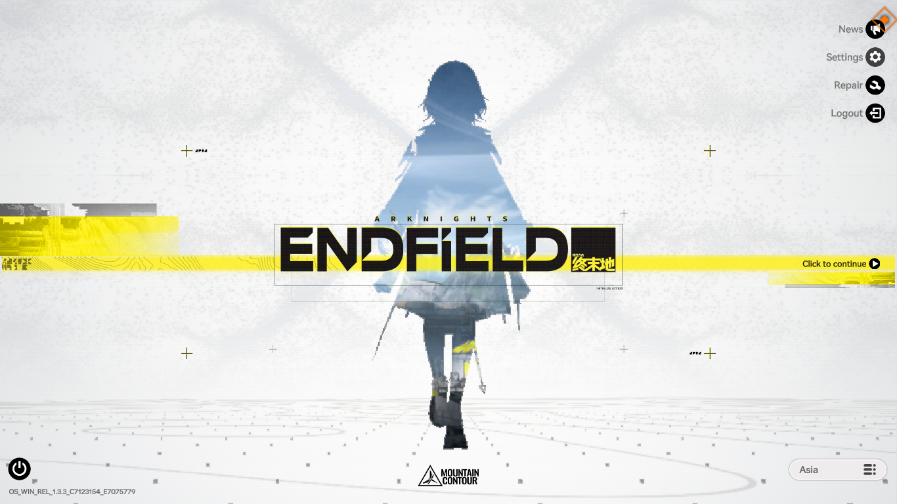
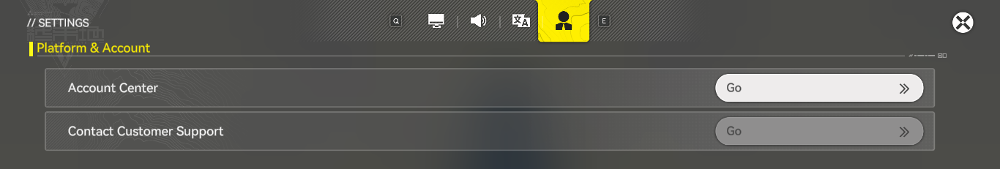
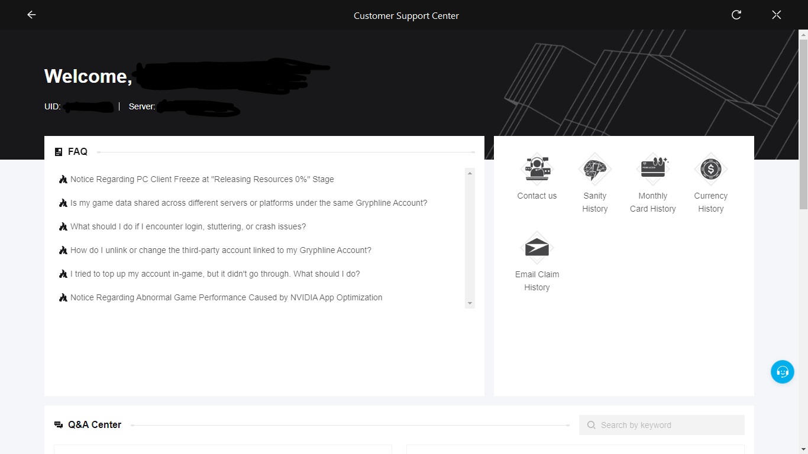
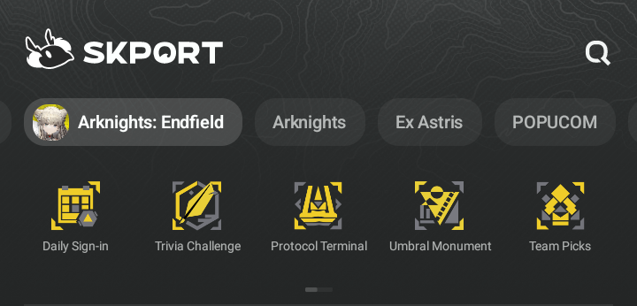
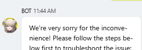
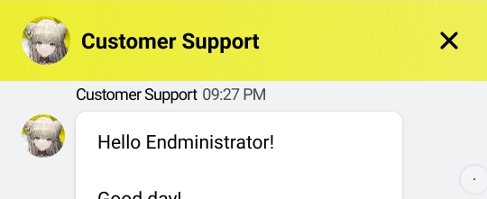
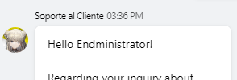
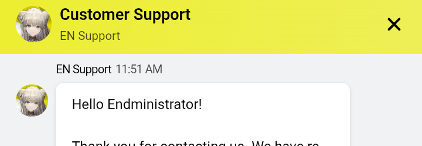
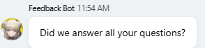

Arknights Endfield Ban Appeal Archive
While the title is a bit clinical, this title is excellent for SEO.
1.About This Site
1.1 What Is This?
If you're reading this, there is a chance you caught a ban in Arknights: Endfield and have reason to believe it was a false positive.
You've probably already scoured forums and social media. You've discovered you aren't the only one, but you are just a tiny, unfortunate fraction of a massive player base who thought, "That'll never happen to me." And unfortunately, most of those similar cases you found? They likely vanished into the void the second the post lost its initial traction.
You are not alone.
This record attempts to study and document account recovery and ban appeal experiences within Arknights: Endfield. Rather than focusing on individual accusations, the goal is to identify patterns:
- Which appeals appear successful?
- Which appeals appear unsuccessful?
- What automated responses do players commonly receive?
- What can future players learn from previous cases?
Every ban case documented in this archive is presented under the pretense of being a false positive.
By collecting and preserving these experiences, this archive aims to provide a clearer picture of a process that is often completely opaque to players. A secondary objective is visibility. If recurring patterns genuinely exist, they cannot be meaningfully discussed, investigated, or improved if nobody outside the affected players is aware of them. By keeping these cases public and searchable, this archive also serves as a way to ensure that relevant stakeholders have the opportunity to see that these experiences exist.
I do not expect this place to suddenly gather hundreds of people. I built it because I know exactly how isolating it feels to search for answers and find absolutely nothing useful. If you found this page because you lost access to your account, received a ban you do not understand, or feel stuck in an endless appeal loop, then this archive was built for people like you. I'll try my best to be fair by separating my own experiences, what I've independently researched, and my personal opinions. I ask that you do the same by separating the facts you find from your own opinions.
Think of this project as a lighthouse. It may not solve every problem. It may not change every outcome. But it can leave a visible trail for the next person searching in the dark.
1.2 What This Site Is Not
- Not an official support channel.
- Not a guarantee that your problem can be solved.
- Not legal advice.
- Not a place to harass support staff, moderators, or other players.
- Not a place to assume every banned player is innocent.
The sole purpose of this project is to document experiences and help people make informed decisions.
1.3 Who Is This?
I am not a lawyer, a journalist, a cybersecurity expert, or an employee of Gryphline or Hypergryph. I do not hold a PhD in getting banned from the University of Ban. I am just a fellow player whose account was banned, butthurt and unemployed enough to navigate this process and document the journey.
By the time this project started, I had already accepted that my account might never return. I am done presenting evidence of my innocence to a brick wall. I am done asking communities for advice only to be met with a "guilty until proven innocent" mentality. I am not asking you to agree with me.
I won't deny it if someone says I have a personal spite against Gryphline (though not necessarily Hypergryph itself) over this. Having received no acknowledgment to my informal dispute notice, physical letter, or personal data request I was left with the impression that these submissions were not meaningfully reviewed.
However, the biggest driving factor that made me do this was something else entirely: If this happens to another player tomorrow, they will likely begin the same search I did. They will read the same scattered posts, ask the same questions, receive the same conflicting advice, and, ultimately, reach the same dead ends.
I never wanted to make this site. Like many players, I naively expected that if a system error occurred, I could simply explain the situation, show the logs, and work with support to resolve it. That wasn't my experience. I pray it wasn't yours.
This archive is my attempt to leave a record behind. Whether you are currently appealing, considering giving up, or simply trying to understand what happened, I hope some part of this documentation proves useful.
1.4 Why GitHub?
Throughout my own experience, I relied heavily on community spaces for information. Some discussions were helpful. Others never gained visibility, spiraled into speculation and slander, or were quietly removed a week later. While social media platforms are excellent for engagement, they are terribly designed for preserving truth.
GitHub is not perfect, but it is one of the most practical places for maintaining a long-term, static public archive. Most importantly, search engines can easily index its contents, making it discoverable for future players. A lighthouse isn't useful if nobody can find it.
2. In Case You Have the Same Trouble: What Can You Do?
Account bans, like in most online games, are typically issued either through automated risk-detection systems or, less commonly, through direct review by staff. Unfortunately, players are almost never told which process led to their account being flagged.
Bans happen for many reasons. Some are entirely justified. Some are misunderstandings. Others may be related to account compromise, suspicious login activity, payment issues, or ownership disputes that the player may not immediately recognize. This archive cannot determine which category your case belongs to. What it can do is help you approach the situation methodically, avoiding early mistakes that could make your case harder to present later.
Check your ban notice. In the over a dozen player reports I personally encountered across different platforms, many, if not all, of the ban dates end at exactly the same time: 2106-02-07 at 01:28 (UTC-5) for NA/EU or 14:28 (UTC+8) for Asia. More importantly, outside of mainland China, the cited reason is often (had to say that because 'almost always' sounds more accusatory) an "Account Risk." From the outside looking in, there is zero visible difference between a legitimate ban and a false positive. The only difference you can make is in the evidence you prepare.
At this stage: Take a deep breath and hold your horses.
Treat the situation like an investigation rather than a verdict. Focus on gathering facts before drawing conclusions or firing off angry emails. You may discover an explanation you hadn't previously considered, or you may finish your self-audit and still genuinely find no valid reason for the ban. Both outcomes are valuable. The goal right now isn't to prove innocence or guilt. It's to understand your situation as clearly as possible.
Your initial response has the highest chance of succeeding because the details are still fresh. Focus on gathering information first before drawing conclusions or making your next move.
2.1 Make Sure YOU Didn't Actually Break the Rules
One of the first harsh realities you will encounter is that many people, whether in community forums or support channels, will instinctively assume you are guilty until proven otherwise. Fair or not, that is the default mindset. Before attempting to convince a support agent, you need to ask yourself the difficult questions.
This is not an accusation. It is a reality check. If you consciously and intentionally violated any of the points below, then you do not fall under the pretense of a false positive ban.
Questions to Ask Yourself
Am I the original creator of this account? Is it actually mine? If you are the original owner and retain access to the registration email, authentication methods, and receipts, you have a strong foundation for an appeal.
Have I ever bought, sold, traded, rented, or shared the account? According to Endfield's Fair Play Statement, account transfers are strictly prohibited. Even with good intentions, passing an account around creates login patterns that look identical to unauthorized access or account compromise to an automated system.
Have I used a shared gaming PC, cloud service, or internet café? While Gryphline has explicitly promoted GeForce NOW for Endfield, meaning cloud gaming isn't inherently a violation, shared networks mean your account activity is mixed with others. Knowing where and how you logged in is critical context.
Have I used any software that interacts with the game? This includes obvious cheats, but also macros, overlays, injectors, debuggers, trainers, or modified game files. Anti-cheat systems evaluate behavior, not user intent. Even running unrelated background software that interacts with game memory can attract scrutiny. If you are uncertain whether an app might be relevant, take note of what was running on your system.
Did I authorize a third-party website or tool? Did you log into a third-party site using your game credentials or authorize an app you didn't fully understand? A prime example was the EndfieldRecords incident, which prompted Gryphline to publish a security notice warning players about unofficial tools.
Have I recently logged in from multiple countries, heavily used a VPN, or switched devices unusually often? While using a VPN isn't an automatic ban, rapid, "impossible travel" IP changes can trigger automated security lockouts. Treat such theories as possibilities rather than established facts.
Did I request a chargeback, or use a third-party top-up service? Payment reversals or using unauthorized third-party vendors who require your login credentials are massive red flags. If you used one, record exactly which service was used.
Was my email compromised? Your game account is only as secure as the email attached to it. Have you reused passwords? Received suspicious login alerts? A compromised email can create consequences far beyond the game itself.
Some players who have never been banned might check several boxes on this list. Conversely, you might genuinely check none of them and still be staring at a ban screen. Must everyone walk on eggshells? Why do some players proudly parade their "gray-zone" accounts, but enforcement seem to come out of nowhere for your account instead? That frustrating uncertainty is exactly why this archive exists.
Treat theories as theories, and evidence as evidence. The distinction matters. If you still cannot identify a likely explanation, your next priority is preparing the strongest appeal possible.
2.1.1 How to Collect Evidence
If you passed the self-check and are ready to fight, your first step is securing the paper trail. Here is what you need to preserve and present immediately:
1. In-Game History Logs
If you can still access the game's title screen, navigate to Settings → Platforms & Account → Contact Customer Support.


Document everything in:
- Sanity History (Keeps records for the past 7 days)
- Monthly Card History (If you bought it. Keeps records up to 90 days)
- Currency History (Keeps records up to 90 days)
- Email Claim History (Keeps records up to 90 days)
Not only does this strengthen the timeline of your legitimate gameplay, but it also allows you to spot any unauthorized activity you didn't recognize.

2. Account Info Screenshots
Gather your Gryphline account data. You can access this via the official site, or the game main screen → Settings → Platforms & Account → Account Center.
Also, pull your Endfield Protocol Terminal info via the SKPORT mobile app → Arknights Endfield → Protocol Terminal.

3. Purchase Receipts
Gather the digital receipts for any transactions you've made, paying special attention to the very first purchase and the most recent purchase.
2.1.2 Setting Expectations
"What are my chances?"
Unfortunately, there is no reliable answer. Some appeals succeed. Some fail. Some get detailed explanations, and others get completely ghosted.
This archive cannot guarantee you a perfect resolution. One of the most frustrating parts of any ban appeal is the severe information asymmetry between you and the publisher. You know your actions and your devices. Gryphline knows their internal logs, security alerts, and proprietary detection metrics.
You may never learn the full story. Many companies intentionally refuse to disclose what triggered an investigation, arguing that revealing their detection methods helps actual cheaters bypass them. From a player's perspective, this feels deeply unsatisfying.
Focus on what you can control:
- The quality of your evidence.
- The clarity of your appeal.
- The accuracy of your timeline.
- The professionalism of your communication.
- The records you keep.
Your job isn't to predict the result. Your job is to present the strongest, most fact-based case possible. If your appeal fails, that does not automatically mean you were dishonest. If it succeeds, that does not automatically prove the system was broken.
2.2 Try Fighting for Your Account Back
2.2.1 Advice on How to Appeal
There are different avenues for support. My recommendation is to use the Help Center website first (you can also access it directly through the game's Settings menu). This route connects you to HelpShift support chat. Keep in mind that HelpShift relies on browser cookies to retain your chat session, so avoid clearing them while your case is active.
The second-best option is the "Contact Us" email form available through the same HelpShift platform. Do not confuse it with manually sending an email to endfield_cs@gryphline.com. The HelpShift route creates a support ticket and provides a ticket number.
My least recommended option is emailing endfield_cs@gryphline.com or support@gryphline.com directly. This route does not provide a ticket number, making follow-ups and case tracking more difficult.
Compiling the Data
These are the questions support may ask when you are pursuing a lost account recovery request. In cases involving an alleged false-positive "account risk" ban, this information can also help demonstrate ownership of the account. Proactively provide:
- Registration method (Email, Google, Apple, etc.).
- Registration country/region and approximate date.
- Purchase records (especially the first one, if any).
- Time and device of your last successful login.
- The very first device used to log in.
- Detailed device specs (Phone model, PC CPU/GPU specs, etc.).
Drafting the Appeal Wordings
Being angry, confused, or frustrated is normal. Leading with those emotions rarely helps. Support agents can only work with verifiable information. Be specific.
Instead of:
"I have always played normally."
Try:
"My account was banned on [Date]. I am the original creator of the account. I have access to the registration email, purchase records, and account information. I have reviewed the Terms of Service and cannot identify any action that may have triggered the ban. Could my case please be reviewed?"
Wrap your appeal in a strict timeline: When you last accessed the game, when you noticed the ban, and any unusual events (device/network changes, payments) that occurred shortly beforehand. Make it easy to read.
Lastly, be careful with accusations. Accusing staff of incompetence or bad faith rarely improves communication. Let the facts speak for themselves.
2.2.2 Why the First Few Appeals Matter
I will share my own mistake with you: I treated my first appeal as a formality. Something rushed. I figured, "I'll just explain everything properly later." That may be a massive mistake. Assume your first appeal is the only one that will actually be read.
Immediately after a ban, your memory is sharp and your records are accessible. Weeks later, details fade and screenshots get lost. Present your strongest evidence immediately. In several cases like mine and those I observed online, customer support responses became less frequent after repeated submissions (usually after two or three, in my opinion). Once the replies slow down, it can be tempting to assume your case has effectively been deprioritized or closed internally. I personally lean towards this belief. Make your first attempt count.
2.2.3 Should You Try Communities?
If you've been falsely banned, asking the community for advice is a reasonable step. Just keep your expectations brutally realistic.
Because false positives are hard to believe until they happen to you, you will likely face extreme skepticism. Conversations often devolve into an endless loop of "You must have done something" vs. "No I didn't," without either side possessing enough info to reach a conclusion.
Community outreach is useful for finding hidden information, identifying similar cases, and creating a public historical record. But be prepared for incomplete information, wild speculation, and outright hostility. If there is a party where you should strive to prove your innocence, it is to customer support, not random commenters.
2.2.4 THAT Response Again...
Hello Endministrator!
Regarding your inquiry about your account being suspended, our relevant team has confirmed that the system detected risks associated with your account, leading to its suspension.
Given the significant risks associated with such an account, we are currently unable to process appeals for account restoration.
If you wish to play the game with a new account, we recommend registering and binding a personal account through official channels. This will ensure account security and help prevent similar issues.
Regards, Arknights: Endfield Customer Support Team
If you browse the internet long enough, you will likely notice that several players receiving messages that are similar. Are these written by bots? Not necessarily, but they are highly templated macros.
Am I only saying this because I'm upset I didn't get my account back? Maybe, but here is what I am personally suspicious of (treat this as speculation, not fact): I suspect that many "account risk" appeals never actually progress beyond the initial layer of customer support. If the system falsely flags an account, how can we be sure the appeals aren't being evaluated by that exact same flawed system? Imagine an agent reviewing your ticket, looking at the internal risk assessment, and simply trusting the system's flag over your word. If your appeal is evaluated primarily by referencing the same system that falsely flagged you in the first place, it's no wonder correcting an error is incredibly difficult.
If you receive this response, ask yourself: Have I already provided all relevant evidence? Have any of my previous appeals contained inconsistent or contradictory information? Simply sending the same appeal repeatedly is unlikely to produce a different outcome. If there is still room for improvement, consider submitting a revised appeal.
2.2.5 Entering the Ghosted Phase?
In some cases, the replies eventually stop. You submitted the evidence. You explained the timeline. You remained polite. You followed every instruction. And now... nothing.
If you decide that you have reached the end of your appeal journey, that is okay. This archive encourages persistence, but it does not demand it. Walking away is a completely reasonable decision.
But if you still have a little bit of fight, or perhaps just a little bit of pettiness left in you, consider keeping the issue visible. For that, I personally thank you.
3.3 Leave a Trail Like Me
3.3.1 What Are the Benefits of Speaking Up?
The overall goal is simple: Make sure future players have something to find when they begin asking the same questions. Beyond helping players, compiling these cases creates a visibility. It serves as a passive but undeniable signal, demonstrating that these account flags are a recurring, documented issue rather than isolated anomalies.
By leaving a record, you make sure the next falsely banned player has a lighthouse to find. One documented case is a story. Ten or more cases reveal patterns. Over time, archived cases can help answer the core questions: What actually happened? What are the common chronologies? Is there even a way out of this?
It is in the nature of automated detection systems that, as long as they are being used, the false-positive rate is unlikely to ever be truly zero. Figuratively speaking, the false-positive rate can appear to be zero if affected users simply disappear without speaking up. Cases that are never reported, discussed, or challenged are easy to overlook and may ultimately be treated as negligible.
3.3.2 How Can You Contribute?
Document Your Experience: If you post online, include the type of ban, the chronology, what you didn't do, the responses you received, and any honest theories about what might have triggered the flag. Run through the self-audit checklist before posting. Separate your raw facts from your personal theories.
When evaluating your own case, it may help to ask a few questions:
- Is the behavior or software in question clearly prohibited by the Fair Play Statement or Terms of Service?
- Would an ordinary player reasonably understand that this could trigger enforcement?
- If not, must everyone walk on eggshells around it?
- Are other players engaging in similar behavior without apparent consequences?
- If so, why do you believe your account was flagged?
Contribute to this Archive: If you want your case logged here, email tfbsg.ae@atomicmail.io. I may ask follow-up questions to verify the situation, as I want the entries here to represent cases where the player genuinely believes the enforcement was erroneous.
Help Other Players: If you see someone else in the same boat, share resources and point them here.
Avoid Unnecessary Accusations: Do not attack, harass, or target any individuals. Avoid rumors presented as facts. The fastest way to destroy credibility is to make claims that cannot be supported. Be neutral, be helpful, be kind.
3.3.3 Additional: Keep It Together
No one can truly measure how much time, effort, and emotion you invested into your account. The character grinds, the gacha luck, the 100% map explorations, the event medals, the months worth of Sanity, the money spent, the memories created.
At some point, however, people will tell you "it's just a game." And ultimately, they are right. Cope for as long as you need to find peace.
If you have done your absolute best to fight it, what else is left? Leave a trail if you wish. Fight if you wish. Move on if you wish. All of those choices are valid.
3.3.4 Beware of Scams
A quick but necessary warning: If you post about a lost or banned account publicly, theres a chance that you will likely be targeted by "account recovery experts" or "hackers" claiming they can bypass Gryphline's servers and restore your account for a fee.
These offers are overwhelmingly scams. Nobody outside of Gryphline itself can unban an account. Do not give these people your money, your account details, or your time.
3. Understanding Gryphline's Customer Servicing
3.1 A Little About Gryphline
GRYPH FRONTIER PTE. LTD., branded as GRYPHLINE, is the global publishing brand of Hypergryph and is headquartered in Singapore. For players outside mainland China, customer support interactions are handled through Gryphline rather than Hypergryph directly.
As of April 2026, public business directories (source: 1, 2) referencing Singapore corporate records reported Gryph Frontier Pte. Ltd. as having fewer than 15 officers or employees. Of course, this does not necessarily mean that fewer than 15 people are running the entire global operation for Arknights: Endfield. Modern companies frequently rely on outsourcing partners. Does Gryphline specifically outsource customer support? While I have not found enough publicly available evidence to make an absolute claim, it is highly unrealistic to imagine every global support ticket entering a massive office filled exclusively with dedicated, in-house Gryphline staff.
A quick note on their registered address: Gryphline's registered business address appears to be shared by over 400 other companies. This is not unusual in Singapore; many businesses use corporate service providers or virtual offices for legal and administrative purposes. A registered address is not necessarily the location where day-to-day operations occur.
Gryphline vs. Hypergryph Support Platforms
For mainland China players, Hypergryph operates its own direct customer service platform. For global players, Gryphline uses Helpshift as its primary support platform. Having personally contacted Hypergryph's mainland system on two occasions, my subjective impression was that the experience felt significantly more direct and responsive than the channels available through Gryphline. Your experience may differ.
3.2 Understanding the Terms of Service (ToS)
If you're wondering why support won't tell you exactly why you got banned, it's because they contractually do not have to.
Like any major publisher, Gryphline's Terms of Service for Arknights: Endfield is a shield built to protect the company, not the customer. It grants them broad authority to suspend or terminate accounts whenever they decide it's necessary, even outside specifically listed rule violations. They can remove your access first and explain absolutely nothing afterward.
Furthermore, paying money doesn't buy you a VIP safety net. The contract explicitly allows them to suspend accounts, revoke transactions they consider suspicious, and deny refunds in almost all circumstances. Under the ToS, your account, premium currency, and virtual items aren't legally considered your property. You are only granted a limited license to use them while your account remains in "good standing."
Here is how the legalese breaks down:
- Broad Discretion to Ban:
- Section 16(d): "...we determine, at our reasonable discretion, that such termination or suspension is necessary or appropriate."
- Section 4: "...we may terminate or suspend your Account... or take any other action to protect and preserve our rights, at our reasonable discretion..."
- No Extra Protection for Paying Customers:
- Section 16: "...we may suspend, restrict, or permanently terminate your access to any or all of the Services..."
- Section 6(b): "If we suspect you have engaged in unauthorized, fraudulent, or improper activity, we reserve the right to cancel or revoke any Transactions... terminate, or suspend your Account."
- Refunds are Generally Denied:
- Section 7: "ALL SERVICES (INCLUDING GAMES), VIRTUAL GOODS, AND GAME CURRENCY... CANNOT BE REDEEMED, REFUNDED, OR EXCHANGED FOR ANYTHING OF VALUE..."
- You Don't Own Your Account:
- Section 5(a): "You have no ownership interest in the Services or any Games or Content contained within the Services."
3.3 Understanding Helpshift
Helpshift is a customer support platform used heavily across the gaming industry. It supports various operating models: fully automated flows, human support agents, hybrid systems, internal teams, and outsourced providers.
So, are the responses actually written by bots? Not necessarily. Based on my own interactions with Endfield support, I observed several different types of responses that suggest multiple layers of automation and human involvement:
Obvious Automated Flow:

This is the immediate response you get when opening a ticket. Its purpose is to categorize the issue, present common solutions, and gather basic information. This stage is highly automated.
Human Support Pool:

If you receive responses with slightly varied wording and timing, you are likely interacting with a human support queue. However, a human delivering a response does not mean they wrote it from scratch. Agents heavily rely on templates, macros, and internal knowledge bases to meet ticket quotas.
In my conversations, I received responses from "Customer Support," then "Soporte al Cliente" (despite not being in a Spanish-speaking region)

and on another occasion, "EN Support" when discussing a data request.

The moment I submitted a request regarding personal data retrieval, my ticket was handled by an agent designated as 'EN Support' instead of the usual 'Customer Support' or 'Soporte al Cliente.' I personally think this suggests multiple support queues or agent groups exist behind the platform. Whether those groups are internal or external is unknown. While this may or may not point to outsourcing, it seems likely that these different layers possess different responsibilities and levels of authority.
The Feedback Bot:

Eventually, conversations end with a feedback survey. When this bot appears, the conversation has been closed. You are no longer actively speaking with a human agent. In some cases, reopening the conversation could result in further human interaction. In others, it did not.
4. "But I Didn't Want To Do This."
That is entirely okay. Seriously.
Originally, we all just wanted our accounts back so we could play the game. You didn't sign up to be an investigator, and stepping away from the whole mess is a completely reasonable stance. I do not force anyone to participate.
This archive exists because I had the time, the drive, and just enough spite to sit down and document my experience. At its core, this project is simply a record. A lighthouse, if you prefer the metaphor.
I have watched quite a handful of people report being struck by a similar problem, claiming a false positive just like mine, and I absolutely refuse to let myself and those people become a quietly disappearing statistic. While this archive is primarily intended to help players, I also hope that it eventually reaches people in positions to improve the situation, whether inside Gryphline, within Hypergryph, or elsewhere. Problems that remain invisible are difficult to acknowledge, and impossible to fix.
If system errors exist and are never publicly visible, let this archive be a stubborn stain.
5. I Wasn't Banned, But Now I'm Concerned
I owe you an apology. One thing I do not want this archive to become is a source of fearmongering. That was never my intention.
Statistically speaking, even if false positives exist, they are almost certainly a small fraction of the overall player base. Most people will play the game, enjoy their experience, and never think about account enforcement at all. You could get away with violating rules, or you could get struck doing absolutely nothing. I sincerely hope situations like the ones documented here become rarer over time, and that nobody has to go through the confusion and frustration it caused.
Unfortunately, no moderation system, anti-cheat system, security system, or review process can ever be guaranteed to be perfect. Mistakes are possible. That does not mean they are common; it simply means they are possible. For those who have already experienced a false positive elsewhere, that uncertainty can be difficult to dismiss. Personally, I am not particularly fond of gambling when something I care about is involved.
Prevention is actually better than appeals. The easiest account issue to solve is the one that never happens.
5.1 Follow The Rules
It is obvious, but it is worth stating. Steer away from whatever the rules strictly bar you from doing. Refer to this. If you knowingly and intentionally violate a rule, then you are no longer dealing with a false positive scenario. You are dealing with a justified enforcement action.
At the same time, one reason this archive exists is because some players believe they were penalized despite avoiding those obvious violations. That uncertainty is exactly why documentation matters. But avoiding clearly prohibited behavior remains the easiest risk reduction strategy available.
5.2 Secure Your Devices And Linked Accounts
Your game account is only as secure as the systems connected to it. When evaluating account security, do not only think about your own actions. Think about everyone who can access the account.
- Does anyone else know my login information?
- Has anyone ever logged into the account?
Even if you personally follow every rule, account activity generated by someone else can still become your problem. The fewer people involved, the fewer variables you need to worry about. Not to mention, account sharing is explicitly against the Fair Play Statement.
5.3 Consider Leaving An Ownership Trail
This section is highly opinionated.
There was a community discussion suggesting that players who intend to stay with a game long-term should consider making at least one purchase. Earlier in this archive, I explained that paying customers do not appear to receive special protection under the Terms of Service. Almost no game company in the world will admit that paying customers are weighted differently in automated triage or prioritized by support.
However, purchases do create records. Purchase receipts can become incredibly useful ownership evidence if you ever need to verify that an account belongs to you. For that reason, making a small purchase after investing significant time leaves a logical paper trail.
One comment from that discussion resonated with me:
"Being able to secure your account for 1€, the price of a can of a soft drink, is definitely worth considering".
Whether you agree with that philosophy is up to you. But if I could turn back time, I'd do this to my own account.
6. Things You Can Do Outside This Place To Keep Helping
Share Useful Resources
Not every contribution needs to be a personal story. Sometimes the most valuable thing you can do is point somebody toward information they would not have found on their own. That could include: Official statements, Security notices, Terms of Service explanations, Appeal advice, Previous case studies, Community discussions. Good information compounds over time.
Correct Misinformation
False information helps nobody. If you see claims that are clearly incorrect, unsupported, or misleading, consider correcting them. This applies regardless of which side of a discussion they support. The goal should be understanding. Not winning arguments.
Remember The Human, Keep Discussions Civil
Whether somebody was correctly banned, incorrectly banned, or something in between, there is usually a real person behind the account. Disagreement is fine. Harassment is not. Try to treat people with the same patience and fairness you would hope to receive yourself.
Remember The Bigger Goal
The best outcome would be for this archive to become unnecessary. If support systems improve, communication improves, and players find answers more easily, then I would happily see this project become obsolete. Until then, preserving information is the next best thing.
7. Contact
If you wish to contribute a case, provide corrections, submit additional information, or discuss something documented in this archive, you may contact:
Please understand that:
- I am not affiliated with Gryphline or Hypergryph.
- I cannot restore accounts.
- I cannot influence support decisions.
- I cannot guarantee a response to every message.
- I may ask follow-up questions if I need clarification.
You are welcome to remain anonymous. Personally identifiable information may be redacted before publication.
If you found this archive because you were searching for answers, I hope it helped. If you found this archive because you wanted to help, thank you. And if you never need this archive again, that is probably the best outcome of all.